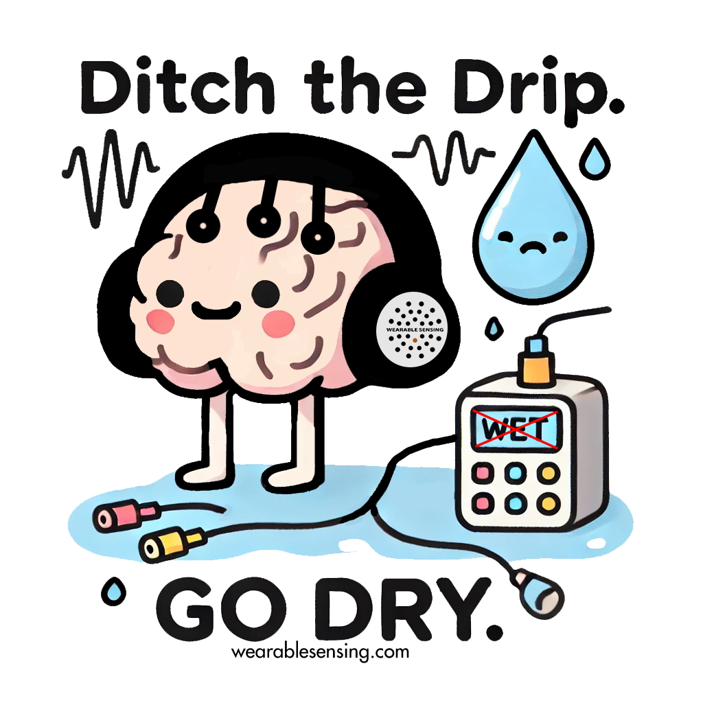

About Us#

Wearable Sensing is a rapidly growing neurotechnology company specializing in dry electrode sensors for brain activity monitoring. Our patented technology ensures high signal quality and artifact-free physiological monitoring in easy-to-use, mobile form factors. This makes it possible to reliably monitor brain activity in real-world environments using our practical EEG headsets.
Our Technology#
Wearable Sensing is revolutionizing neuroscience research and enabling innovative applications across various commercial domains. These include:
Neurorehabilitation
Brain computer interface (BCI)
Virtual reality
Neurofeedback
Neuromarketing
Neuroeducation
And many more
Get in Touch#
We’re here to help!
Whether you have questions about our technology, need additional support, want to explore a partnership, or have feedback on our products or documentation, please don’t hesitate to reach out or follow us using the links below.
Acknowledgements#
This documentation site is built with the following open-source tools: Sphinx, PyData Sphinx Theme, MyST Parser, sphinx-design, and sphinx-copybutton.